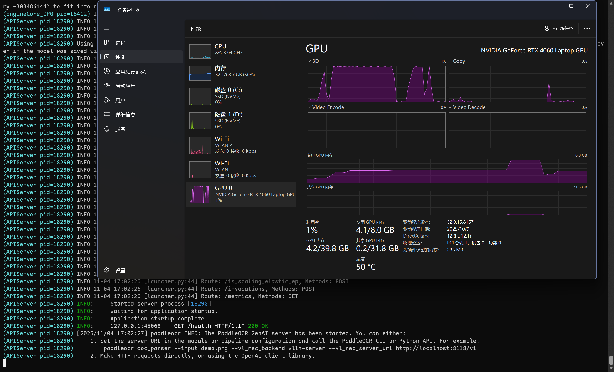

使用vLLM框架加速PaddleOCR-VL
之前直接使用pipeline模式进行PaddleOCR-VL的推理，优点是安装相对简单，但缺点是速度太慢了，推理速度只有之前PaddleOCR的40%，已经比DeepSeek-OCR快不了多少了。这个速度识别几本书还行，多了的话速度根本不够。
造成速度慢的主要原因是PaddleOCR-VL模型在不使用推理框架的时候，只支持使用 batch_size=1 进行推理，因此GPU根本跑不起来。
PaddleOCR-VL是支持使用vLLM框架进行加速的。之前没有使用，主要是在安装的时候发现需要装特定版本的 flash-attn，于是就放弃了。
编译安装 flash-attn 需要的内存极其恐怖。如果不做任何配置的话，编译过程中 ninja 会自动根据CPU内核数量开启并行编译，而 flash-attn 在使用nvcc编译的时候又默认开启 sm_80、sm_90、sm_100、sm_120 四个编译目标，因此在我的电脑上，实际会同时运行 个进程进行编译。
这样的话，即使我给WSL分配了50G的内存和75G的交换文件，也很快就被爆掉了。
之前在系统里安装这个包的时候，我是把 MAX_JOBS 设为3，然后修改源代码只开启 sm_80、sm_89 两个编译目标，这样只有6个进程同时进行编译，才不会爆内存。
不过如此设置的话，编译速度也就很感人了，编译一次就要超过1小时。
作为对比，下面是我的电脑上常用的「大」软件的编译时间：
1 | # qlop -cmv sci-ml/caffe2-2.9.0 sci-ml/flash-attention-2.8.3 sys-devel/gcc-14.3.0 llvm-core/llvm-21.1.4 llvm-core/clang-21.1.4 dev-lang/rust-1.91.0 |
可能也就只有之前编译TensorFlow的时间比它长了。
好在，后来找到了预编译包的仓库，里面有各个版本的编译好的包可以直接使用，因此就可以配置vLLM了。
1. 安装vLLM推理框架
按照官方提示，
由于推理加速框架可能与飞桨框架存在依赖冲突，建议在虚拟环境中安装。
我看了一下，主要是PaddlePaddle和vLLM依赖的PyTorch对于一系列nvidia包的不同（paddlepaddle-gpu==3.2.0 依赖12.9版本的CUDA，而 vllm==0.10.2 依赖 pytorch==2.8.0 及12.8版本的CUDA）。
所以新建一个虚拟环境，并安装vLLM推理框架：
1 | uv venv --seed -p python3.12 .venv_vllm |
注意：
- 要先安装预编译的
flash-attn包，否则直接运行安装vLLM框架的命令会报错。 - 要根据Python版本、Pytorch版本（目前版本的vLLM依赖的是2.8）来选择对应的
flash-attn包。具体的链接在上面仓库的主页可以找到。
然后就可以启动vLLM服务了：
1 | VIRTUAL_ENV=.venv_vllm uv run paddleocr genai_server --model_name PaddleOCR-VL-0.9B --backend vllm --port 8118 --backend_config <(echo -e 'gpu-memory-utilization: 0.8\nmax-model-len: 8192') |
这里务必要根据自己的显卡对vLLM服务参数进行调整。作为参考，我的显卡是RTX4060，显存大小是8G。
从PaddleX的配置文件可以看到，默认传给vLLM的参数为：
1 | trust-remote-code: True |
其中必须调整的参数：
gpu_memory_utilization 是vLLM可以占用的显存比例，如果是默认的0.5即50%，由于我的笔记本电脑显存只有8G，使用一半的话就只有4G了，这是肯定不够的，因此就直接报错了。
根据之前的经验，在使用PaddlePaddle进行推理的时候就需要5~6G的显存。因此我给vLLM分配了80%的显存，这样就足够了。
另外，在开启独显直连的情况下，即使不进行什么复杂任务，显存也要用掉0.8~1.2G。计算可用显存的时候要把这部分刨去。
max_model_len 是模型的上下文长度。默认值对我来说太大了，直接就报错说显存不够。
在没有运行大量其它占用显存的程序的时候，把 max_model_len 设为 8192 是可以运行的。但我也遇到过一次启动报错的情况，因此可以把它再调小一些。
不过，这个值也不能太小了，至少是 。因为输入要用掉14个tokens，默认的最大输出是4096个tokens，因此至少要不小于这两个加起来的数量，否则推理的时候就会报错。
当屏幕出现 "GET /health HTTP/1.1" 200 OK 的字样时就说明vLLM服务启动成功了。
在vLLM服务的启动过程中，占用的显存会超过8G，如图

不过很快就回落了，最终在推理的时候不需要借用内存，因此不会影响推理速度。
2. 调用vLLM推理服务
在另一个终端可以直接使用命令行进行调用：
1 | uv run paddleocr doc_parser --input ./input/test.pdf --save_path output --vl_rec_backend vllm-server --vl_rec_server_url http://localhost:8118/v1 |
也可以使用Python进行调用：
1 | pipeline = PaddleOCRVL( |
后续的使用方法就和之前一样了。
3. 速度对比
使用vLLM会带来巨大（超过20倍）的速度提升。在我的电脑上，跑完8本小蓝本，只需要27分41秒（均衡模式）。在推理过程中，显卡基本保持在80W的功率。
作为对比，在Kaggle上使用 GPU T4x2，并开启双卡双进程编译，需要5小时40分。
之前在本地运行的时候没有总计时，但是基本每本书都需要1小时以上的时间，其中最厚的《三角形与四边形》甚至需要将近两个小时。